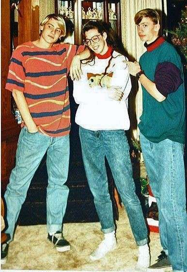
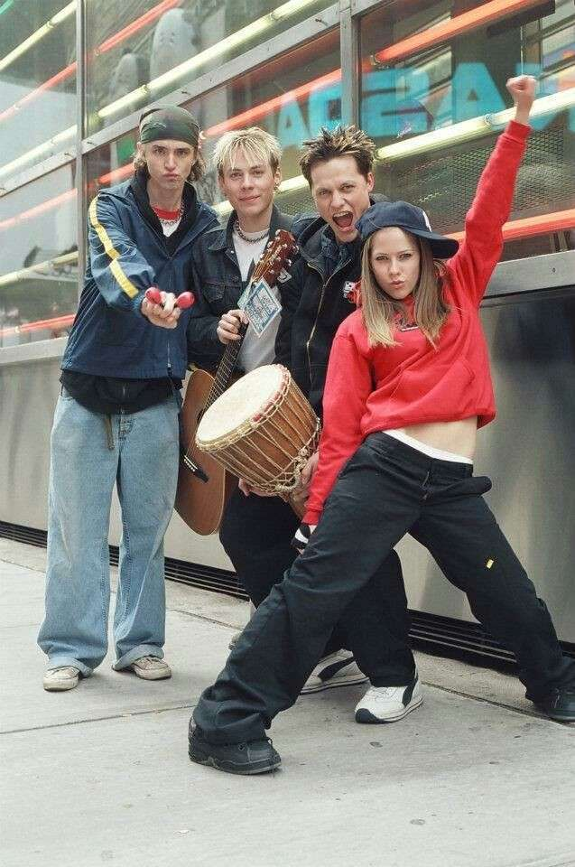

Moda anilor 1990 a fost diversă și influențată de diferite subculturi, marcând o tranziție de la extravaganța anilor '80 la o estetică mai casual și minimalistă. Stilul grunge, inspirat de muzica rock alternativă, includea blugi rupți, tricouri lălâi și cămăși în carouri, reflectând un aspect neglijent. Minimalismul a adus croieli simple și culori neutre, cu influențe de la designeri precum Calvin Klein. Cultura hip-hop a avut un impact major, popularizând pantaloni largi, tricouri supradimensionate și jachete bomber. Moda urbană a accentuat stilurile casual și sport, cu hanorace și pantofi de sport devenind piese de bază. În plus, a existat un interes pentru moda vintage și retro, cu stiluri din anii '60 și '70 reinterpretate și piese de îmbrăcăminte second-hand fiind la modă. În ansamblu, moda anilor 1990 a fost despre inovație, diversitate și reflectarea schimbărilor culturale.
În anii 2000, moda a fost caracterizată de o combinație de influențe retro și inovații moderne, reflectând un deceniu de schimbări rapide și diversitate. Stilul Y2K, specific începutului de mileniu, era marcat de piese futuriste, culori metalice, pantaloni cu talie joasă și accesorii strălucitoare. Cultura pop și vedetele din muzică și televiziune au influențat puternic tendințele, cu articole precum blugii bootcut, topurile scurte și fustele mini devenind populare datorită celebrităților precum Britney Spears și Christina Aguilera. Stilul boho-chic, inspirat de modă vintage și etnică, a fost popularizat de figuri ca Sienna Miller și Mary-Kate Olsen, incluzând rochii fluide, imprimeuri florale și accesorii precum curele și pălării largi. Moda sport și casual a câștigat teren, cu branduri precum Juicy Couture și Puma promovând treninguri de catifea și haine confortabile. În plus, stilul emo, influențat de muzica rock și punk, a adus în prim-plan tricourile negre, blugii skinny și părul vopsit în culori intense. În ansamblu, moda anilor 2000 a fost marcată de eclectism, cu o varietate de stiluri coexistând și reflectând un deceniu de experimentare și expresivitate individuală.
1. Proporții echilibrate: Asigură-te că ținutele tale au un echilibru între articolele largi și cele strâmte. De exemplu, dacă porți o bluză largă, combin-o cu pantaloni mai strâmți, și invers.
2. Piese de bază:
Investește în articole clasice și de calitate, cum ar fi blugi bine croiți, tricouri simple, cămăși albe și sacouri negre.
Acestea sunt elemente esențiale care nu se demodează și pot fi combinate în diverse moduri.
3. Încălțămintea potrivită: Încălțămintea poate transforma complet o ținută. Asigură-te că alegi pantofii potriviți pentru ocazie și că se potrivesc cu restul ținutei.
4. Adaptare la ocazie:
Alege-ți ținuta în funcție de evenimentul la care participi. Ce este adecvat pentru o seară în oraș poate să nu fie potrivit pentru birou sau pentru un eveniment formal.